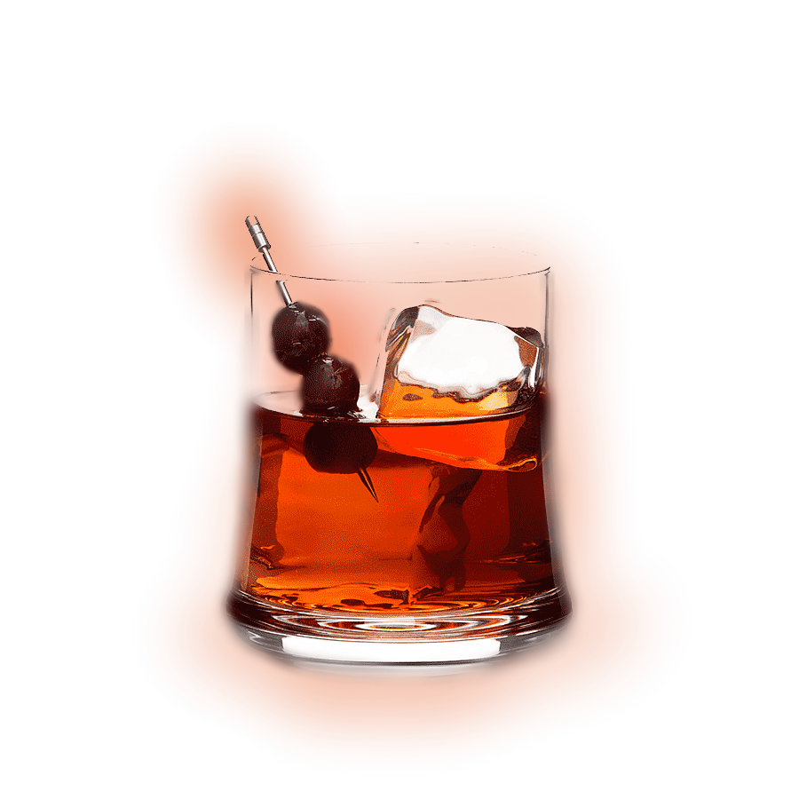
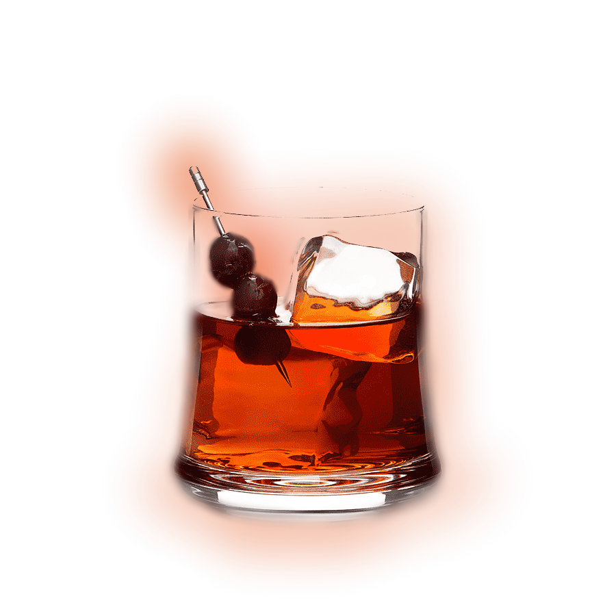

¿Qué cóctel puedo tomar hoy?.
¿Qué cóctel puedo tomar hoy? Es una aplicación web que podrá ayudarte tanto a decidir que cóctel tomar hoy en base a los ingredientes que dispones, cómo a su própia preparación.
¿Qué cóctel puedo tomar hoy? Es una aplicación web que podrá ayudarte tanto a decidir que cóctel tomar hoy en base a los ingredientes que dispones, cómo a su própia preparación.